Tsuruoka
Tsuruoka · Yamagata
Tsuruoka
Highlighted on the Yamagata map.

Stay
九兵衛旅館

Kyuubee Ryokan
Ryokan inn in Tsuruoka, Yamagata.
ホテル スティ・イン山王プラザ（HOTEL STAYin山王プラザ）
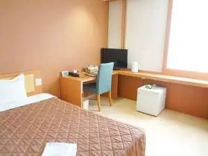
Hoteru Sutei In Sannou Puraza ( Hotel Stayin Sannou Puraza )
Hotel in Tsuruoka, Yamagata.
アパホテル〈山形鶴岡駅前〉
Apahoteru (Yamagata Tsuruoka Ekimae)
Hotel in Tsuruoka, Yamagata.
天然温泉 湯の瀬の湯 スーパーホテル山形・鶴岡
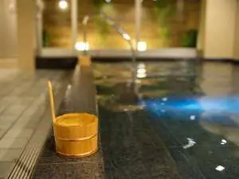
Tennen Onsen Yu No Se No Yu Suupaahoteru Yamagata Tsuruoka
Hotel in Tsuruoka, Yamagata.
ホテル スティ・イン山王プラザプレミアアネックス
Hoteru Sutei In Sannou Purazapuremiaanekkusu
Hotel in Tsuruoka, Yamagata.
ホテル・アルファ－ワン鶴岡
Hoteru Arufa - Wan Tsuruoka
Hotel in Tsuruoka, Yamagata.
ホテルルートイン鶴岡インター
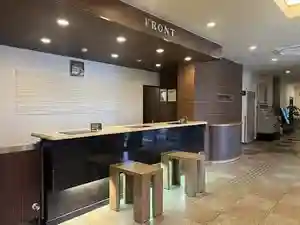
Hoteruruutoin Tsuruoka Intaa
Hotel in Tsuruoka, Yamagata.
Dining
中華そば処 琴平荘

Chuuka Soba Tokoro Kotohira Sou
Ramen shop in Tsuruoka, Yamagata.
中華そば 琴の
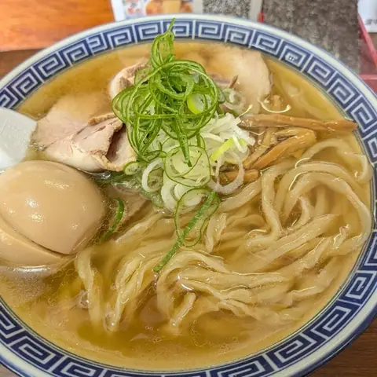
Chuuka Soba Kon No
Ramen shop in Tsuruoka, Yamagata.
いな舟
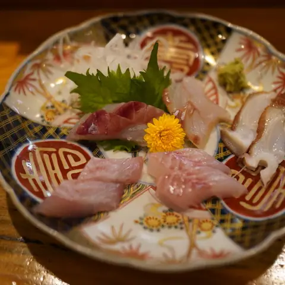
Ina Fune
Japanese restaurant in Tsuruoka, Yamagata.
フルーツショップ青森屋
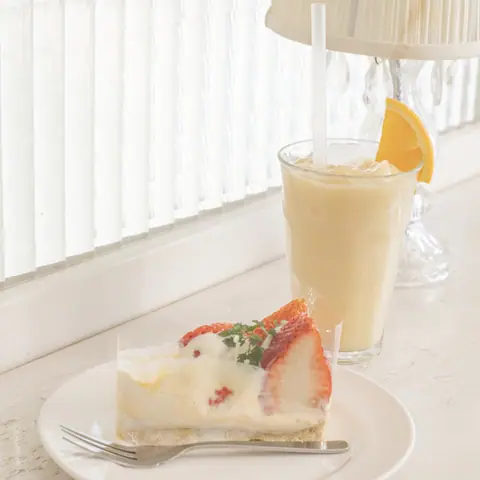
Furuutsushoppu Aomori Ya
Fruit parlour in Tsuruoka, Yamagata.
アル・ケッチァーノ
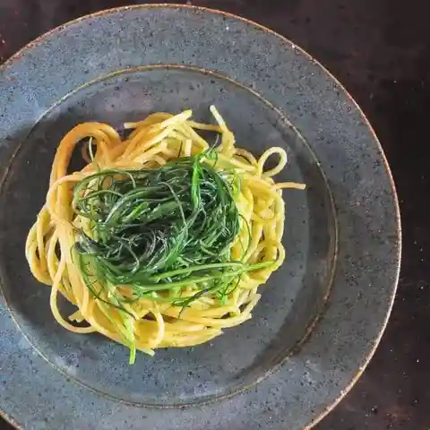
Aru Ketchiaano
Italian restaurant in Tsuruoka, Yamagata.
庄内魚河岸酒場 潮彩
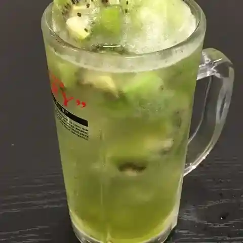
Shounai Uogashi Sakaba Shio Sai
Seafood restaurant in Tsuruoka, Yamagata.
八方寿し
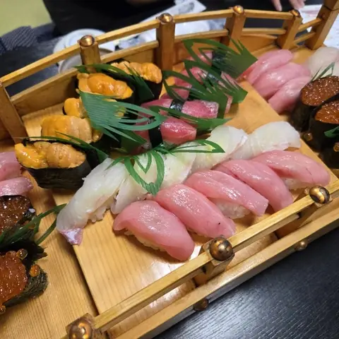
Happou Hisashi Shi
Sushi restaurant in Tsuruoka, Yamagata.
鮨処 朝日屋
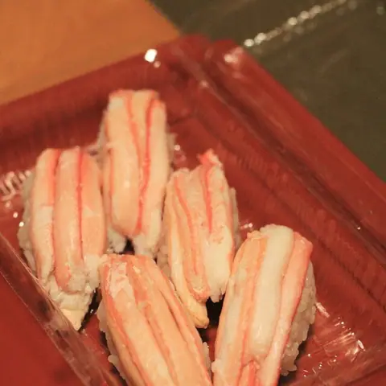
Sushi Tokoro Asahi Ya
Sushi restaurant in Tsuruoka, Yamagata.
知憩軒
Chi Kei Ken
Ryokan restaurant in Tsuruoka, Yamagata.
ポム ド テール
Pomu Do Teeru
Bistro in Tsuruoka, Yamagata.
萬国屋
Bankoku Ya
Ryokan restaurant in Tsuruoka, Yamagata.
ケンちゃんラーメン 鶴岡店
Ken Chan Raamen Tsuruoka Mise
Ramen shop in Tsuruoka, Yamagata.
中華そば 雲ノ糸 鶴岡本店
Chuuka Soba Kumo No Ito Tsuruoka Honten
Ramen shop in Tsuruoka, Yamagata.
金太郎寿し 新斎店
Kintarou Hisashi Shi Shin Sai Mise
Conveyor-belt sushi in Tsuruoka, Yamagata.
緑のイスキア
Midori No Isukia
Café in Tsuruoka, Yamagata.
琴壱
Kon Ichi
Ramen shop in Tsuruoka, Yamagata.
太麺屋
Futomen Ya
Ramen shop in Tsuruoka, Yamagata.
羽黒山 斎館
Haguro Yama Sai Kan
Japanese restaurant in Tsuruoka, Yamagata.
串と小皿料理 酒菜 鶴と亀
Kushi To Kozara Ryouri Shusai Tsuru To Kame
Izakaya in Tsuruoka, Yamagata.
めん処 久太
Men Tokoro Kyuuta
Ramen shop in Tsuruoka, Yamagata.
寝覚屋半兵エ
Nezame Ya Han Hei E
Soba restaurant in Tsuruoka, Yamagata.
みどり食堂
Midori Shokudou
Shokudo diner in Tsuruoka, Yamagata.
Sights
Mt. Haguro
The sacred mountain of cedar trees awarded three stars in the Michelin Green Guide
Kamo Aquarium

Awarded a Guinness World Record for the world’s largest jellyfish collection
Mt. Gassan
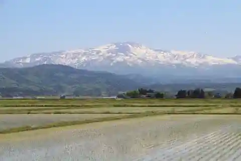
Enjoy breath-taking views while trekking on this mountain judging reincarnation
Mt. Haguro Dewa Sanzan Sanjin Gosaiden
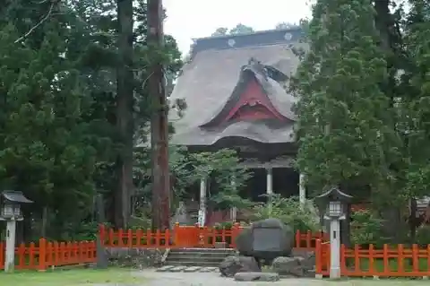
The Sanjin Gosaiden on the summit of Mt. Haguro enshrines the deities of all three Dewa Sanzan mountains: Gassan, for peace after death (the past); Haguro, for happiness in this life (the present); and Yudono, for rebirth (the future).
Yudonosan Shrine
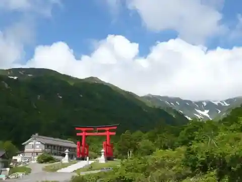
This mysterious sacred location is the last stop of the Three Mountains of Dewa
Atsumi Onsen
Atsumi Onsen is a hot spring resort town with a pleasant atmosphere.
Yunohama Onsen
Enjoy the stunning sunset view over the sea while relaxing in an open-air bath at this Onsen!
Mt. Yudono
At 1,504 m and linked to Mt. Gassan, Mt. Yudono ranks with Ise and Kumano as one of Japan's three great sacred sites. In a gorge carved by the Bonji River on its northern slope stands the main sanctuary of Yudonosan Shrine, revered as a guardian of good harvests and household safety.